Santander Visión Prospectiva · 2050

Manual conceptual-operativo del sistema Santander Visión 2050
Arquitectura, definiciones, soporte epistemológico y criterios de medición
1. Introducción
Santander enfrenta una decisión histórica
Santander enfrenta una decisión histórica: continuar reproduciendo las inercias del desarrollo que han limitado su capacidad de generar bienestar sostenible, o construir deliberadamente un sistema territorial capaz de aprender, adaptarse y transformarse en un entorno de cambio estructural permanente.
Las últimas décadas han demostrado que el territorio cuenta con diagnósticos rigurosos, instituciones activas y agendas de desarrollo bien formuladas. Sin embargo, también han evidenciado una limitación persistente: la brecha entre la comprensión de los problemas y la capacidad de transformarlos de manera sostenida. Esta brecha no es únicamente técnica o financiera; es estructural.
Santander Visión 2050 surge como una respuesta a esta limitación. No es un plan tradicional, ni un listado de proyectos, ni una agenda sectorial. Es la construcción de un sistema operativo territorial adaptativo, orientado a fortalecer la capacidad del territorio para reproducir bienestar económico, social y ecológico en el tiempo, en condiciones de incertidumbre creciente.
Este manual conceptual-operativo tiene como propósito hacer explícita esa arquitectura. Define los elementos que componen el sistema, sus relaciones, su fundamento epistemológico y los criterios mediante los cuales pueden ser evaluados.
El modelo se organiza en dos grandes componentes: un diagnóstico estructural (C1) que identifica lo que limita y lo que cambia, y un sistema de ejecución y coordinación (C2) que organiza la acción transformadora a través de misiones, motores, portafolio y laboratorios vivos. Ambos están atravesados por un ciclo adaptativo permanente.

No todos los elementos son medibles de la misma forma
La distinción epistemológica es central para superar la crítica de subjetividad. Cada elemento del sistema cumple una función distinta y por eso exige criterios de evaluación acordes a su naturaleza.
| Tipo epistemológico | Elemento | ¿Medible? | Nivel de gestión | Función en el sistema |
|---|---|---|---|---|
| Variable de estado | Problemáticas estructurales | Sí (proxy) | Diagnóstico C1 | Describen lo que limita hoy |
| Dinámica contextual | Transiciones estructurales | Parcialmente | Diagnóstico C1 | Explican por qué el cambio es inevitable |
| Marco normativo | Retos + capacidades | Sí | Diagnóstico C1 | Definen qué transformar y hacia dónde |
| Sistema operativo | M4 Gobernanza Participativa | Sí (IGAT) | Ejecución C2 | Coordina y da continuidad al sistema |
| Plataforma integradora | Misiones M1-M2-M3-M5 | Sí (KPIs) | Ejecución C2 | Fijan direccionalidad del cambio |
| Ecosistema ECTI | Motores ECTI A-H | Sí (ISPT) | Instrumento C2 | Generan valor soportado en conocimiento |
| Sistema de inversiones | Portafolio de proyectos | Sí (fichas) | Instrumento C2 | Materializan las misiones en acción |
| Dispositivo experimental | Laboratorios vivos SB1-SB6 | Sí (IAAT) | Instrumento C2 | Experimentan antes de escalar |
| Capacidad transversal | Ciclo adaptativo permanente | Sí | Aprendizaje | Convierte experiencia en ajuste |
| Infraestructura cognitiva | SSITD | Sí (IITD) | M4 interno | Genera inteligencia desde la base |
| Lente ético-normativo | Hilos transversales T1-T2 | Sí | Transversal | Evalúan si el desarrollo construye justicia |
I3S e IESE se incorporan como instrumentos en construcción metodológica a partir de la actualización de abril de 2026.
Los diez componentes operativos en el orden lógico del sistema
Primero el diagnóstico (C1), luego la ejecución y coordinación (C2) con sus tres subcapas, y finalmente los elementos del ciclo adaptativo y del circuito interno de gobernanza.
Problemáticas estructurales
Configuraciones persistentes, interdependientes y acumulativas de fallas sistémicas. En Santander 2050 se identifican 9 problemáticas; P9 es la de interfaz externa.
Transiciones estructurales
Procesos de cambio sistémico, no lineales e inevitables. T7 redefine el entorno geopolítico y crea la necesidad del NIGT.
Retos territoriales y capacidades
Las decisiones colectivas que definen qué transformar y hacia dónde. El sistema consolida 8 retos y 5 capacidades fundamentales.
M4 · Inteligencia Territorial y Gobernanza Participativa
Sistema operativo territorial adaptativo. Incorpora SSITD, Gemelo Digital, Consejo de Futuro, Alianza por Santander y NIGT.
Misiones estratégicas M1-M2-M3-M5
Plataformas integradoras que movilizan políticas, inversión, ciencia e innovación con horizontes 2028, 2035 y 2050.
Motores del desarrollo · ECTI
Ocho ecosistemas de innovación productivos y socioeconómicos adaptativos soportados en conocimiento. Generan valor, empleo e innovación.
Portafolio de proyectos estratégicos
Sistema de 50 inversiones interdependientes para materializar el primer tramo del cambio entre 2026 y 2030.
Laboratorios vivos territoriales
Sandboxes de experimentación real y controlada para probar soluciones antes de escalar, con aprendizaje simultáneo.
Ciclo adaptativo permanente
Seguimiento, evaluación, ajuste y escalamiento. Convierte experiencia en evidencia y evidencia en decisiones de ajuste.
SSITD · Sistema de Inteligencia Territorial Distribuida
Infraestructura cognitiva que distribuye la capacidad de pensar el territorio en miles de nodos comunitarios.
Lentes de evaluación ética permanente
Los hilos transversales no son misiones adicionales ni capítulos separados: son criterios con los que se evalúa permanentemente si el sistema construye desarrollo con justicia, derechos e inclusión.
Paz con Justicia Social, Derechos Humanos y Seguridad Humana
Pregunta si el sistema garantiza derechos, reduce violencias estructurales y no acepta regresiones en nombre del desarrollo. Evalúa cada decisión con el test de la seguridad humana integral.
Equidad, Diversidad e Inclusión
Pregunta si el sistema llega a mujeres, comunidades étnicas, poblaciones diversas y territorios dispersos como sujetos activos de la transformación, no como beneficiarios pasivos.
Cada proyecto, misión, motor o laboratorio vivo debe demostrar su aporte a estos dos lentes de evaluación ética.
De la arquitectura implícita al sistema operativo explícito
Santander 2050 no propone ejecutar mejor los instrumentos existentes. Propone transformar la forma misma en que el territorio decide, actúa y aprende.
Se comprende el territorio
9 problemáticas estructurales y 7 transiciones.
Se decide qué transformar
8 retos territoriales y 5 capacidades de reproducción.
Se define hacia dónde
5 misiones estratégicas que orientan el cambio.
Se ejecuta con propósito
8 motores ECTI, portafolio de proyectos y 6 laboratorios vivos.
Se aprende mientras se actúa
El ciclo adaptativo permanente observa, evalúa y ajusta.
Se valida el entorno externo
T7 y P9 obligan a mirar el mundo, anticipar shocks y posicionarse.
Resumen operativo del sistema
Lo que nos limita hoy
Las 9 problemáticas estructurales muestran los límites ecológicos, sociales, productivos, territoriales, institucionales y geopolíticos del desarrollo actual.
El cambio inevitable
Las 7 transiciones explican los grandes procesos de transformación que ya atraviesan el territorio y que no pueden ignorarse.
Las capacidades a construir
El desarrollo no se define como una meta abstracta, sino como 5 capacidades fundamentales e interdependientes.
Las decisiones colectivas
Los 8 retos territoriales traducen esas capacidades en decisiones estratégicas que Santander debe resolver hacia 2050.
La movilización del cambio
Las 5 misiones y los 8 motores articulan acción pública, inversión, conocimiento e innovación para materializar la visión.
Santander no necesita solo crecer. Necesita fortalecer su capacidad de reproducir bienestar económico, social, ecológico e institucional de manera sostenida, justa y territorialmente equilibrada.